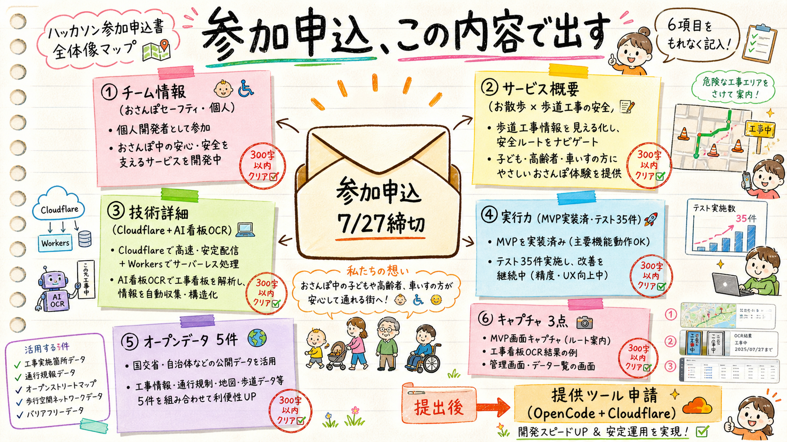

0.全体像

6項目の記入内容マップ
1.チーム情報
チーム名: おさんぽセーフティ ／ 参加形態: 個人参加
（サービス案を50字で聞かれた場合）
工事による歩道規制を事前に知らせ、園児・車椅子のお散歩ルートの安全を守る地図サービス42字/50字
2.サービス概要 275字/300字
着目した課題・背景、サービスの詳細
保育園のお散歩や特別支援学校の校外学習の下見（実踏）では、担当者が事前にルートの安全を確認しているが、工事による歩道の一時的な通行止めや狭小を事前に知る手段がない。歩道が塞がれると園児の列や車椅子は急な迂回を強いられ、車道側にはみ出す危険が生じる。本サービス「おさんぽセーフティ」は、東京都の路上工事オープンデータ等を活用し、地図上に散歩ルートを引くだけで工事規制との交差を自動判定し、歩行者・車椅子・ベビーカー別に危険箇所を提示する。さらに現場の工事看板を撮影するとAIが工事名・工期・規制内容を読み取り、市民参加で規制データが育つ仕組みを備える。
3.プロダクト・技術詳細 294字/300字
技術選定理由、生成AI活用方法、デモURL
Cloudflare上にフルサーバレスで構築（Pages/Workers/Hono/D1）。地図は国土地理院タイル＋MapLibre GL JSを採用し、APIキーやライセンス制約なく公開できる構成とした。ルートと規制の交差判定は線分間距離の幾何エンジンを実装し、同一の規制を歩行者・車椅子・ベビーカー別の注意度（低中高）に変換する。生成AIはClaudeのvision＋構造化出力を用い、工事看板の写真1枚から工事名・工期・規制種別をJSONで抽出し登録下書きを生成する。登録データはGeoJSON/CSV/APIで再配信し他サービスから再利用できる。デモURLは提出時までに公開予定。
4.チーム実行力 258字/300字
メンバー構成と役割
個人参加。企画・調査・設計・実装・テストの全工程を、生成AIエージェントを駆使した開発体制で一人で高速に回している。応募時点でMVP（リスク地図・利用者別リスク変換・お散歩ルートの危険自動判定・看板OCR登録・データ出力API）は実装済みで、自動テスト35件が全て通過している。またAIリサーチにより市場・競合・制度の調査を実施し、「工事による歩道の一時規制を動的に扱う国内サービスは空白領域」であることを確認した上で開発している。残期間は実データ拡充、Cloudflareへの公開、UI改善、プレゼン制作に充てる。
5.オープンデータ利用状況（最大10件）
| # | データ | 状況・用途 |
|---|
| 1 | 東京都建設局「23区内 都道の路上工事情報」(CC BY) | 利用中。工事規制データとして取込 |
| 2 | 国土地理院 地理院タイル | 利用中。ベースマップ |
| 3 | 国交省「歩行空間ネットワークデータ」(ほこナビ) | 利用予定。段差・幅員による車椅子リスク判定 |
| 4 | JARTIC 交通量オープンデータ | 利用予定。影響度スコアの重みづけ |
| 5 | 東京都オープンデータAPIカタログ（路上工事 JSON/XML） | 利用予定。更新自動化 |
6.プレゼン資料（画面キャプチャ 最大3点）
| # | キャプチャ | 準備 |
|---|
| 1 | リスク地図画面（利用者別モードで規制が色分け表示） | ローカルで撮影可能 |
| 2 | お散歩ルート危険判定（危険箇所パネル表示） | ローカルで撮影可能 |
| 3 | 看板OCR登録（写真→AI下書き→地図登録） | APIキー設定後に撮影 |
提出後のアクション：①提供ツール申請（OpenCode LLMセット＋Cloudflare Paid相当・9月末まで利用可）②キャプチャ3点は私が撮影して用意します。
確認事項
- この6項目の内容で提出してよいか（チーム名「おさんぽセーフティ」含む）。
- 「自動テスト35件」「空白領域」等の実績記述は事実ベース（実装・調査済み）— 誇張が気になる箇所があれば指摘を。
- OKならフォーム（form.jotform.com/261468325066056）にコピペ提出 → 提供ツール申請へ。原稿は docs/entry/entry-application.md。